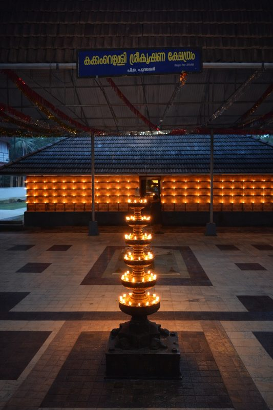
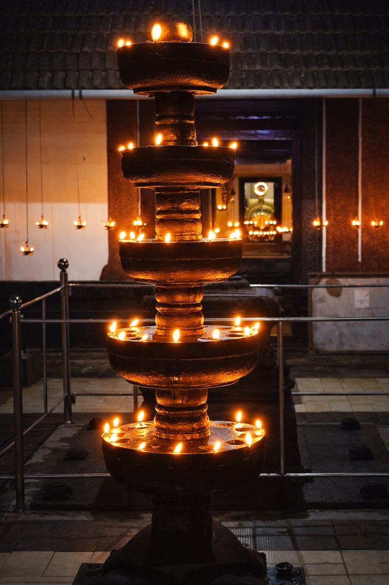
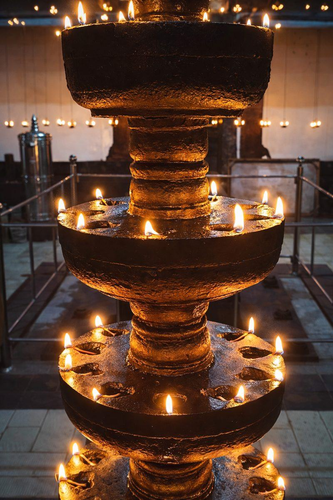
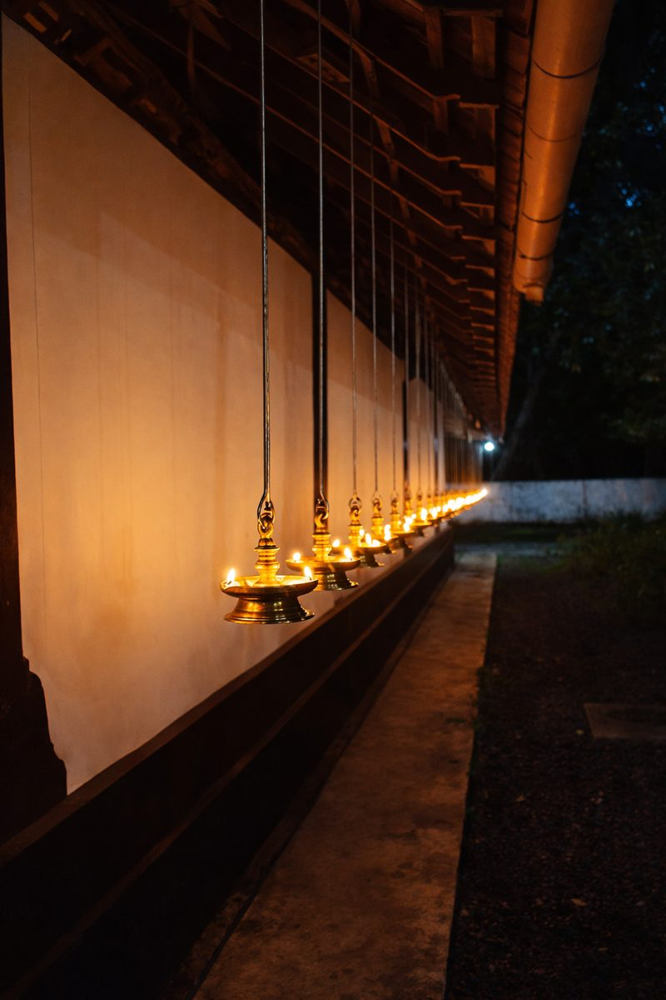
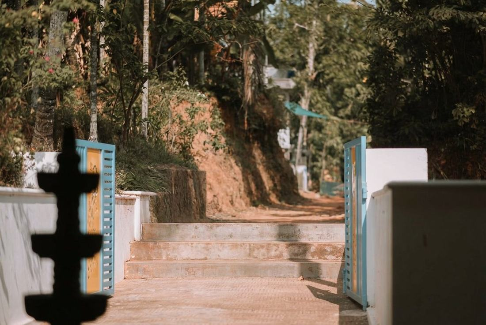
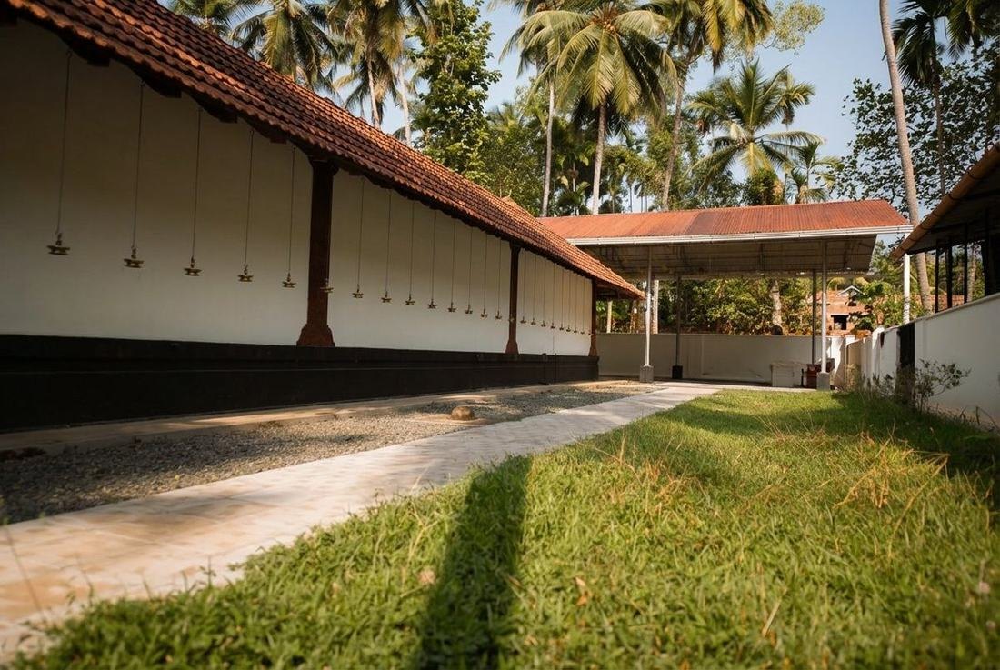

ഹരേ കൃഷ്ണ
കക്കംവെള്ളി
ശ്രീകൃഷ്ണ ക്ഷേത്രം
Kakkamvelly Sreekrishna Temple
പുറമേരി, കോഴിക്കോട്, കേരളം
ക്ഷേത്ര വിവരം പങ്കിടുകഇന്നത്തെ ക്ഷേത്ര വിവരം
ക്ഷേത്ര സമയക്രമവും പൂജ ഷെഡ്യൂളും
രാവിലെ (പ്രഭാത പൂജ)
| പൂജ | സമയം |
|---|---|
| നിർമ്മാല്യദർശനം | 5:30 AM |
| തിടമ്പ് എഴുന്നള്ളിപ്പ് | 5:30 AM |
| ഉഷ പൂജ | 6:00 AM – 6:30 AM |
| അതിർത്തു പൂജ | 6:30 AM – 7:00 AM |
| പന്തീരടി പൂജ | 7:00 AM – 8:00 AM |
| ഉച്ചപൂജ | 10:30 AM – 12:00 PM |
വൈകുന്നേരം (സായഹ്ന പൂജ)
| പൂജ | സമയം |
|---|---|
| ദീപാരാധന (വൈകുന്നേരം) | 5:30 PM – 6:00 PM |
| അത്താഴ പൂജ | 7:00 PM – 8:00 PM |
| ശ്രീക്കോവിൽ അടക്കൽ | 6:45 PM |
ക്ഷേത്ര തുറക്കൽ സമയം
ഉത്സവ ദിനങ്ങളിൽ സമയക്രമം മാറ്റം വരാം. വിഷു 2026 (ഏപ്രിൽ 15): 5:00 AM – 7:30 PM (Special). ക്ഷേത്ര ഓഫീസ്: +91 94468 44145
ക്ഷേത്രത്തെ കുറിച്ച്

ഉണ്ണിക്കൃഷ്ണന്റെ പുണ്യ ഭൂമി
A small but beautiful temple — once destroyed during Tippu Sultan's rampage through Malabar — Kakkamvelly Sreekrishna Temple stands today as a symbol of enduring faith and devotion. Renovated and lovingly maintained by the local community, it is now a serene place for prayer and worship.
ടിപ്പുവിന്റെ ആക്രമണത്തിൽ തകർന്നിട്ടുണ്ടായ ഈ ക്ഷേത്രം ഇന്ന് സമാധാനത്തിന്റെയും ഭക്തിയുടെയും ഒരു പ്രതീകമായി നിലനിൽക്കുന്നു. ഗുരുവായൂരിലെ പ്രതിമയെ ഓർമ്മിപ്പിക്കുന്ന കുട്ടികൃഷ്ണന്റെ രൂപത്തിൽ പ്രതിഷ്ഠിതനായ ഭഗവാൻ കൃഷ്ണൻ, ഭക്തിയോടെ പ്രാർത്ഥിക്കുന്നവരുടെ ആഗ്രഹങ്ങൾ സാക്ഷാത്കരിക്കുന്നു എന്ന് വിശ്വസിക്കുന്നു.
The presiding deity is Lord Krishna in his childhood form — Little Krishna (ഉണ്ണിക്കൃഷ്ണൻ). Many devotees believe the idol here resembles the sacred form at the famous Guruvayur Temple. A powerful idol who fulfils the wishes of those who believe in him with a whole heart. 🙏
This is a quiet, intimate temple — there are no vedikkett (fireworks) during festivals, and elephants are not part of the celebrations here. What you will find is pure, peaceful devotion.
ക്ഷേത്ര ചിത്രങ്ങൾ





സ്ഥലവും വഴിക്കുറിപ്പും
എങ്ങനെ എത്തിച്ചേരാം
കക്കംവെള്ളി ശ്രീകൃഷ്ണ ക്ഷേത്രം,
പുറമേരി, കോഴിക്കോട്, കേരളം – 673503
കക്കംവെള്ളി ശ്രീകൃഷ്ണ ക്ഷേത്രം
പുറമേരി, കോഴിക്കോട്, Kerala 673503
Kakkamvelly Sreekrishna Temple · Purameri
ക്ഷേത്ര സന്ദർശന ഗൈഡ്
സ്ത്രീ: സാരി / ചുരിദാർ
ജീൻസ്, ഷോർട്ട് നിഷിദ്ധം
ഞങ്ങളെ ബന്ധപ്പെടുക
ക്ഷേത്രവുമായി ബന്ധപ്പെടുക
- കക്കംവെള്ളി ശ്രീകൃഷ്ണ ക്ഷേത്രം, പുറമേരി, കോഴിക്കോട്, കേരളം
- kakkamvellytemple@gmail.com
- Secretary: +91 94468 44145
- ക്ഷേത്ര ഓഫീസ്: 8:00 AM – 9:00 AM & 5:45 PM – 6:45 PM
ക്ഷേത്ര വഴിപാട് & ദാനം
ക്ഷേത്ര നിർമ്മാണത്തിനും നിത്യ പൂജകൾക്കും ഭക്തരുടെ സഹകരണം ക്ഷണിക്കുന്നു
UPI / ഓൺലൈൻ ദാനം — ക്ഷേത്ര ഓഫീസ് വഴി ബന്ധപ്പെടുക
kakkamvellytemple@upi